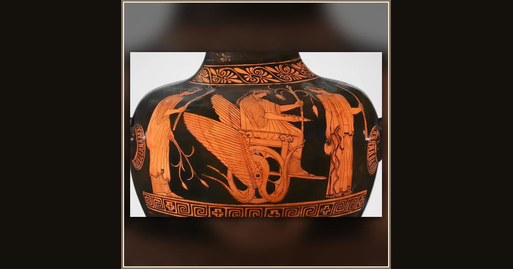

Terracotta hydria: kalpis (water jar)
Niobid Painter · ca. 460–450 BCE · met
A youth rides a winged chariot between two robed women, holding stalks of grain; the image recalls Demeter's return of crops and her teaching of Triptolemus (471–475) Explore its place in Homer's The Homeric Hymns, Hymn 2 · To Demeter, line 476.